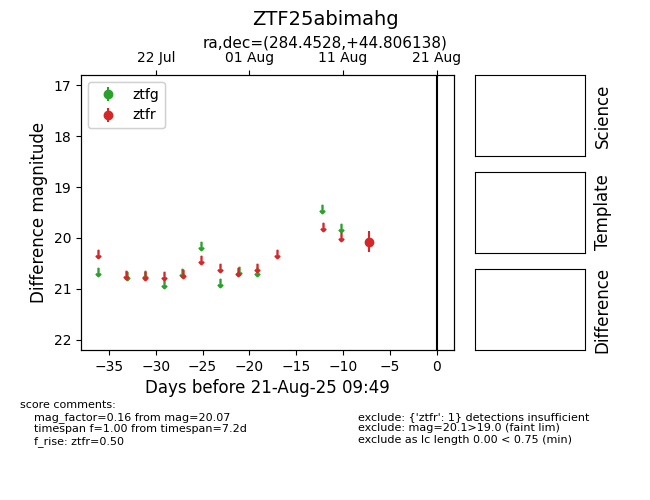

Target ZTF25abimahg at 2025-08-21 09:49, see:
FINK: fink-portal.org/ZTF25abimahg
Lasair: lasair-ztf.lsst.ac.uk/objects/ZTF25abimahg
ALeRCE: alerce.online/object/ZTF25abimahg
alt names
ZTF25abimahg (ztf,alerce)
coordinates:
equatorial (ra, dec) = (284.4528,+44.80614)
galactic (l, b) = (74.8244,+17.68472)
photometry
last ztfr=20.07
1 ztfr detections
